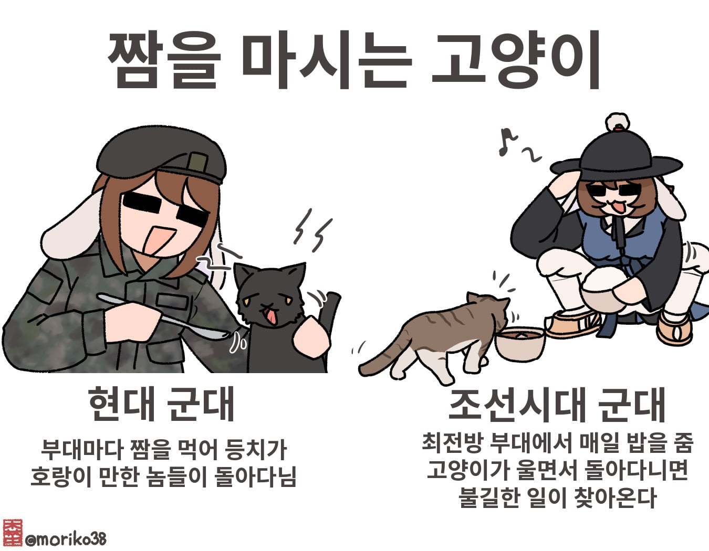
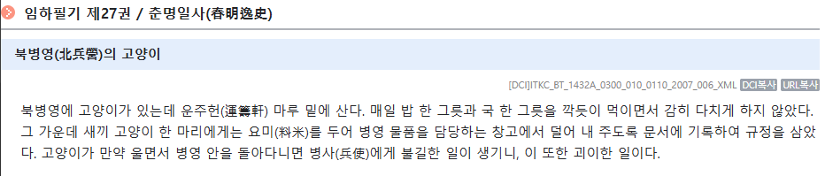
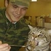
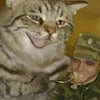
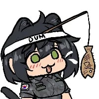

43 · 10 · 2 시간 전 · 원문


수집 당시 댓글 10개
유아학교 · 4 시간 전

↳ 답글 · 호랑냥표 · 3 시간 전

아청법위헌 · 4 시간 전
꾸준한 연재 화이팅
남로당프락치 · 4 시간 전
네 마리 형제 고양이가 있었소
↳ 답글 · 베댓전문가 · 2 시간 전
산양성애자 유료도로당이 더 비슷하지않나 ㅋㅋㅋ
쉐도우복싱 · 3 시간 전
브랜뉴보이 · 3 시간 전
그 짬식이 였나 들개한테 죽은 가족 복수한 짬타이거 만화 생각난다
왜용 · 2 시간 전
옛부터 요망했구만 ㅋㅋㅋㅋㅋㅋ
오늘도야근이다 · 2 시간 전

흑밥 · 2 시간 전


